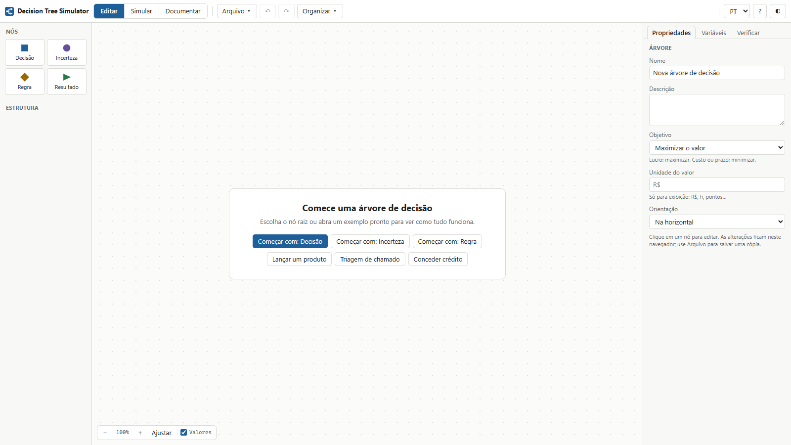
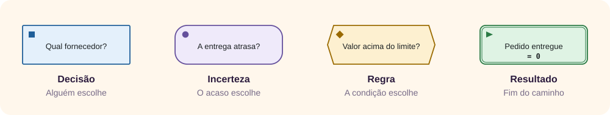
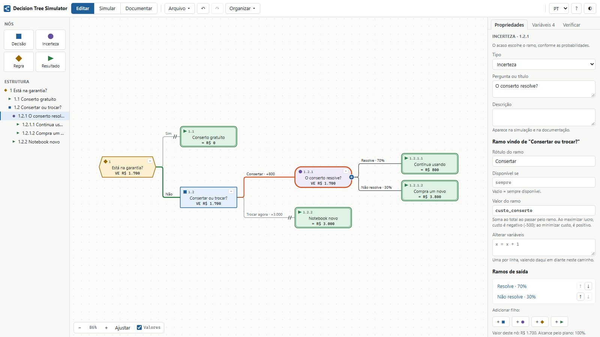
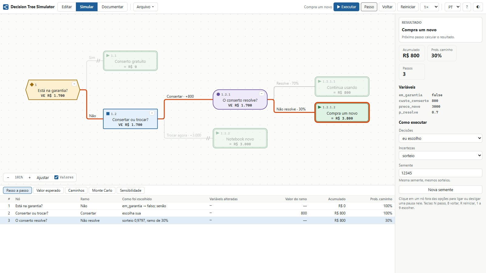
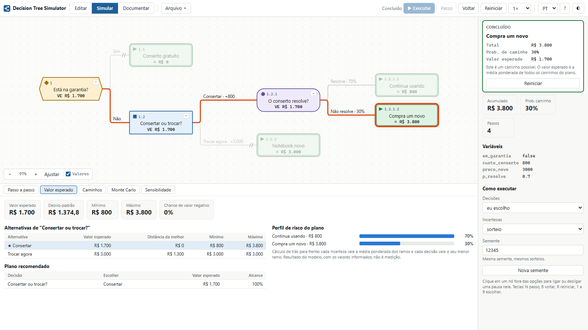
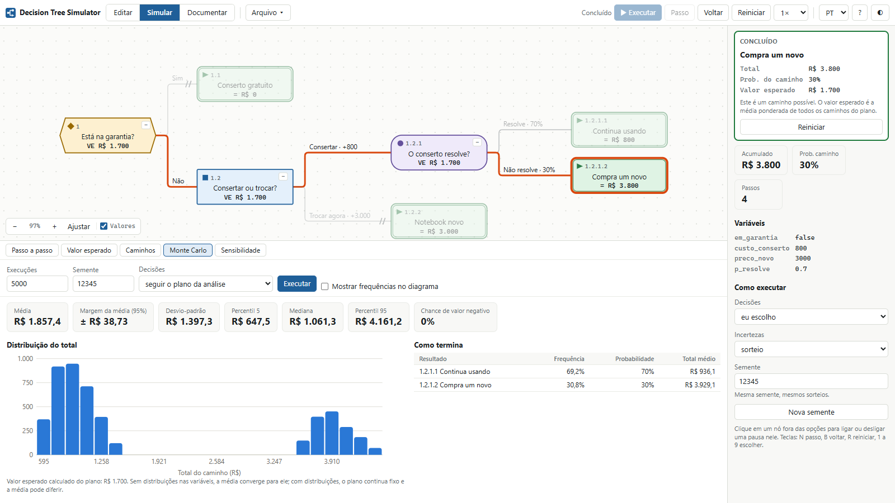
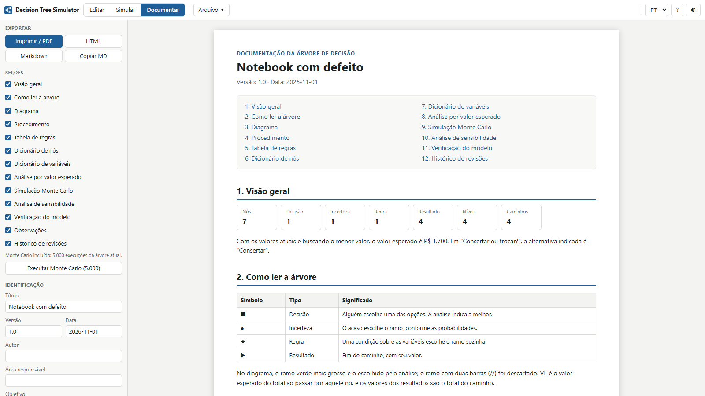
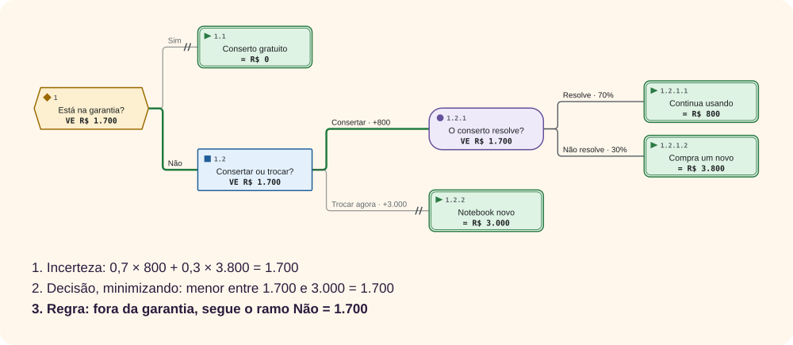
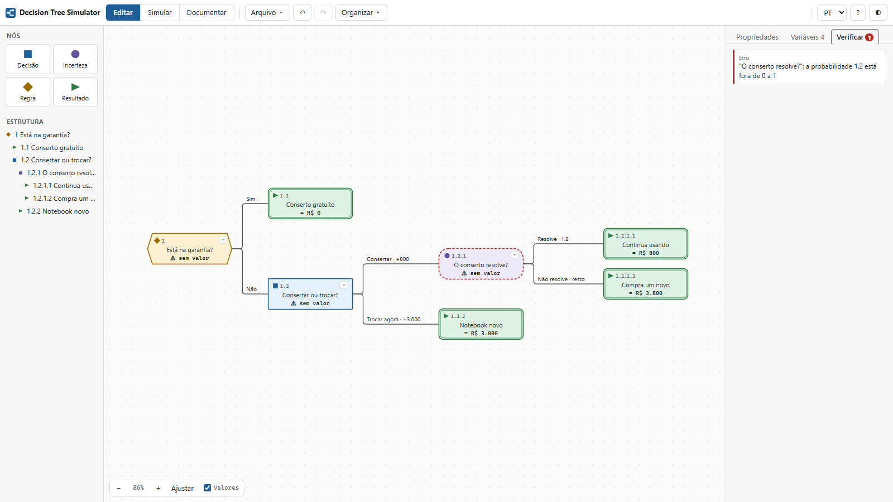
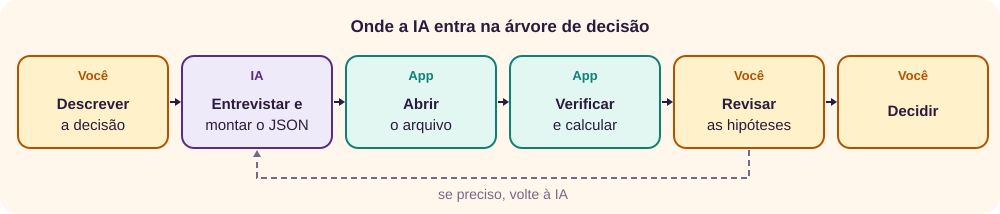

O que é o Decision Tree Simulator
Uma árvore de decisão é um modelo em forma de árvore com as decisões e suas consequências possíveis, incluindo eventos de acaso, custos e utilidade. [2] O Decision Tree Simulator monta essas árvores, executa e documenta. [1] É um único arquivo HTML, que funciona no navegador, sem instalação nem conta.
Abrir o Decision Tree Simulator

Por que desenhar uma decisão em vez de só pensar nela? Porque a árvore obriga a separar o que você escolhe do que não controla, e a dar um número a cada hipótese. Ao passar a decisão para a árvore, as hipóteses ficam à vista e podem ser discutidas. A árvore ajuda mesmo com poucos dados concretos. [2]
A área que estuda esse tipo de problema se chama análise de decisão: o termo foi usado por Ronald A. Howard em um artigo de 1966, e Howard Raiffa publicou um texto introdutório em 1968. [3]
O trabalho acontece em três modos, escolhidos no alto da tela:
- Editar
- Montar a árvore, preencher os campos e declarar as variáveis.
- Simular
- Percorrer passo a passo e ver valor esperado, caminhos, Monte Carlo e sensibilidade.
- Documentar
- Ler, imprimir e exportar a documentação gerada a partir da árvore.
Como o app trata os seus dados
- Nada sai do seu computador. O arquivo bloqueia conexões de rede.
- A árvore fica no navegador. Ela é guardada automaticamente e reaparece ao reabrir o app. Para ter uma cópia própria, salve em JSON.
- Árvores não executam código. As expressões passam por um interpretador próprio, então abrir um arquivo recebido de outra pessoa não roda JavaScript.
Exemplos prontos
Em Arquivo ▾, o grupo Exemplos traz três árvores. Todos os valores são fictícios.
- Lançar um produto: decisões em sequência, com um teste de mercado no meio.
- Triagem de chamado: regras com dados de entrada, e valor em horas, que se minimiza.
- Conceder crédito: regra por escore, variável alterada em um ramo e distribuição no Monte Carlo.
Os quatro nós
A notação usual tem três símbolos: quadrado para decisão, círculo para acaso e triângulo para o fim. [2] O app usa esses três como ícones e acrescenta a regra, para os casos em que nada precisa ser escolhido nem sorteado, porque os dados já definem o caminho.

| Nó | Quem escolhe o ramo | Na análise, vale |
|---|---|---|
| ■ Decisão | Uma pessoa. | O melhor ramo disponível, conforme o objetivo. |
| ● Incerteza | O acaso, pelas probabilidades dos ramos. | A média ponderada dos ramos. |
| ◆ Regra | A primeira condição verdadeira, na ordem dos ramos. | O ramo que a condição escolher. |
| ▶ Resultado | Ninguém: o caminho termina. | O total acumulado no caminho. |
Sua primeira árvore: consertar ou trocar
Em cerca de 20 minutos, você vai decidir o que fazer com um notebook com defeito. Se estiver na garantia, o conserto é gratuito. Fora dela, você pode pagar R$ 800 por um conserto que resolve em 70% dos casos, com o risco de precisar comprar outro mesmo assim, ou trocar logo por R$ 3.000. Os valores são fictícios. Como tudo é custo, o objetivo é minimizar.
1. Configure a árvore
- Se o app abrir com outra árvore, use Arquivo ▾ → Novo.
- No painel direito, preencha Nome com
Notebook com defeito. - Em Objetivo, escolha Minimizar o valor.
- Em Unidade do valor, digite
R$.
2. Declare as variáveis
Variáveis deixam os números em um só lugar. Abra a aba Variáveis e clique em + Nova variável uma vez para cada linha.
| Variável | Valor | Também preencha |
|---|---|---|
em_garantia | false | Marque Perguntar ao iniciar o passo a passo e, em Pergunta, digite Está na garantia? (true ou false) |
custo_conserto | 800 | Distribuição no Monte Carlo: triangular(500, 800, 1500) |
preco_novo | 3000 | — |
p_resolve | 0.7 | — |
3. Monte a árvore
- No centro da tela, clique em Começar com: Regra, digite
Está na garantia?e pressione Enter. - Para cada linha da tabela, clique no nó de origem e depois no + que aparece na borda dele. No menu, escolha o tipo, digite o texto e pressione Enter.
- Com o nó novo selecionado, preencha os campos no painel direito. Se a árvore sair da tela, clique em Ajustar.
| Origem | Tipo | Texto | Rótulo do ramo | Outros campos |
|---|---|---|---|---|
| Está na garantia? | Resultado | Conserto gratuito | Sim | Condição: em_garantia; Valor: 0 |
| Está na garantia? | Decisão | Consertar ou trocar? | Não | Deixe Condição vazia: é o “senão”. |
| Consertar ou trocar? | Incerteza | O conserto resolve? | Consertar | Valor do ramo: custo_conserto |
| O conserto resolve? | Resultado | Continua usando | Resolve | Probabilidade: p_resolve; Valor: 0 |
| O conserto resolve? | Resultado | Compra um novo | Não resolve | Deixe Probabilidade vazia: é o restante. Valor: preco_novo |
| Consertar ou trocar? | Resultado | Notebook novo | Trocar agora | Valor do ramo: preco_novo; Valor: 0 |

4. Verifique
Abra a aba Verificar. Deve aparecer Nenhum problema encontrado. A raiz mostra VE R$ 1.700. Se o número for outro, confira os campos da tabela.
5. Percorra passo a passo
- Clique em Simular. O painel pede o dado de entrada: mantenha
falsee clique em Iniciar. - Clique em Passo. A regra avalia a condição, e o caminho segue pelo ramo Não.
- O painel pede sua escolha. Clique em Consertar. O acumulado passa a R$ 800.
- Clique em Passo. Com a semente 12345, o sorteio dá 0,9797, e o ramo sorteado é Não resolve.
- Clique em Passo de novo. O caminho termina em Compra um novo, com total de R$ 3.800.

Note que o valor esperado de R$ 1.700 não aconteceu: neste caminho você gastou R$ 3.800, e no outro gastaria R$ 800. O valor esperado é a média ponderada, não uma previsão do que vai ocorrer. [4]
6. Compare as alternativas
Abra a aba Valor esperado. Consertar vale R$ 1.700 (de R$ 800 a R$ 3.800) e trocar vale R$ 3.000, sem variação. Consertar custa R$ 1.300 a menos em média, mas tem 30% de chance de sair mais caro que trocar. A árvore não decide por você se esse risco é aceitável: ela o deixa visível.

7. Rode o Monte Carlo
Abra a aba Monte Carlo e clique em Executar. Com 5.000 execuções e semente 12345, medimos média de R$ 1.857,4, com margem de ± R$ 38,73. A média passa de 1.700 porque o custo do conserto agora é sorteado da distribuição, cuja média é 933, e não 800.

8. Procure o ponto de virada
Abra a aba Sensibilidade, escolha p_resolve em Variável e clique em Calcular. O app indica a virada em p_resolve ≈ 0,2667. Confira à mão: 800 + (1 − p) × 3000 = 3000 dá p ≈ 0,2667. Logo, consertar continua melhor mesmo se a chance de resolver for bem menor que os 70% estimados, e isso diz mais que o número 1.700.
9. Gere o documento
Clique em Documentar. O documento já traz diagrama, procedimento, tabela de regras, dicionários e análises. Use Imprimir / PDF para imprimir ou gerar o PDF.

A interface
| Área | Para que serve |
|---|---|
| Barra superior | Modos, Arquivo ▾, desfazer e refazer, Organizar ▾, idioma, ajuda (?) e tema (◐). |
| Nós | Clique em um tipo para criar um filho do nó selecionado, ou arraste-o para o diagrama. |
| Estrutura | A árvore em lista, com a mesma numeração do diagrama. Clique para encontrar um nó. |
| Diagrama | Arraste o fundo para mover, use a roda do mouse para o zoom ou, no toque, dois dedos. |
| Valores | Liga e desliga os valores, a linha do melhor ramo e as marcas // no diagrama. |
| Painel direito | Propriedades do nó selecionado (ou da árvore, sem seleção), Variáveis e Verificar. |
Desenhar e organizar
- Criar um filho: clique no + da borda do nó e escolha o tipo, ou selecione o nó e use as teclas D, C, R ou O.
- Editar texto: clique duplo no nó ou no rótulo do ramo. No toque, toque duas vezes.
- Mudar de pai: arraste o nó sobre outro nó, ou arraste o + de um nó até outro. O nó leva tudo o que está abaixo dele. O app recusa ligações que criariam um ciclo.
- Reordenar ramos: use as setas em Ramos de saída. Em uma regra, a ordem muda o resultado.
- Recolher: clique no − no canto do nó para esconder o que está abaixo. O nó passa a mostrar quantos ficaram escondidos.
- Layout: o layout é automático até você arrastar um nó para um espaço vazio. Aí ele passa a ser manual, até você usar Organizar ▾ → Reorganizar agora. O mesmo menu troca entre Na horizontal e Na vertical.
Cada nó tem um único pai, e os caminhos só se abrem, nunca se juntam, como é próprio de uma árvore. [2] Se dois caminhos levam à mesma situação, copie o ramo com Copiar ramo e Colar como filho.
Nós e ramos: os campos
Um ramo pertence ao nó de destino. Por isso, os campos do ramo aparecem quando você seleciona o filho, ou clica na linha.
| Campo | Onde | O que faz |
|---|---|---|
| Pergunta ou título | Nó | O texto do nó. |
| Descrição | Nó | Explicação que aparece na simulação e na documentação. |
| Valor | Resultado | Número ou expressão somado ao total do caminho. Vazio conta como 0. |
| Categoria | Resultado | Rótulo livre, como Aprovado ou P1. |
| Ação recomendada | Resultado | Mensagem final. Trechos entre chaves são calculados: {x * 2}. |
| Rótulo do ramo | Ramo | O nome da opção ou do caso. |
| Probabilidade | Ramo de incerteza | Aceita 0.3, 0,3, 30% ou uma expressão. Vazio divide o que falta para 100%. |
| Condição | Ramo de regra | Vale o primeiro ramo verdadeiro. Vazio é o “senão”. |
| Disponível se | Ramo de decisão | Quando for falso, a opção fica indisponível. |
| Valor do ramo | Ramo | Soma ao total ao passar pelo ramo. |
| Alterar variáveis | Ramo | Uma atribuição por linha, como pd = 0.02. Vale daqui em diante neste caminho. |
| Pausar a execução neste nó | Nó | Faz ▶ Executar parar ao chegar aqui. |
Variáveis e expressões
Em cada variável, Valor é o usado na análise e no passo a passo. Distribuição no Monte Carlo é opcional e só vale nas execuções do Monte Carlo. Marque Perguntar ao iniciar o passo a passo para informar o valor a cada simulação, e a análise é recalculada com ele.
| Recurso | Exemplos |
|---|---|
| Aritmética | + - * / % ^ |
| Comparação | == != < <= > >= |
| Lógica | and or not, condicao ? a : b |
| Funções | min max abs round floor ceil sqrt pow |
| Sorteios | random(a, b), normal(m, s), triangular(a, m, b), exponential(m), randint(a, b), chance(p) |
Nas expressões, o decimal é com ponto, porque a vírgula separa argumentos: min(1.5, 2). Na análise, um sorteio vale a sua média.
Como o valor esperado é calculado
Valor esperado é a média dos valores possíveis, ponderada pelas probabilidades. [4] O app calcula da direita para a esquerda, começando nos resultados:

- Um resultado vale o total do caminho: valores dos ramos mais o valor dele.
- Uma incerteza vale a média dos ramos, ponderada pelas probabilidades.
- Uma decisão vale o melhor ramo disponível, conforme o objetivo. Em caso de empate, fica o primeiro.
- Uma regra vale o ramo escolhido pela condição, com os valores atuais das variáveis.
O resultado é um plano: o que escolher em cada decisão. No diagrama, os ramos escolhidos ficam verdes e mais grossos, e os descartados recebem //. O plano mostra a melhor escolha na média, sem considerar o quanto você tolera risco.
Verificar o modelo
A aba Verificar lista os problemas enquanto você edita. O número na aba mostra quantos há. Clique em um problema para ir até o nó. Erros impedem o cálculo daquela parte da árvore; alertas apontam algo provavelmente esquecido.

A verificação confere se o modelo pode ser calculado, não se ele está certo. Uma probabilidade errada, mas válida, passa sem aviso.
Simular passo a passo
| Controle | O que faz |
|---|---|
| Passo | Avança um nó. |
| ▶ Executar | Avança sozinho, na velocidade escolhida. Para nas decisões que dependem de você e nas pausas. |
| Voltar | Desfaz o último passo, inclusive o sorteio. |
| Reiniciar | Recomeça da raiz, com a mesma semente. |
| Clique em um nó | Fora das opções, liga ou desliga uma pausa nele. Nas opções, faz a escolha. |
| Linha da tabela | Volta até aquele passo. |
Em Como executar, você escolhe quem decide:
- Decisões: eu escolho, seguir o plano da análise ou ao acaso.
- Incertezas: sorteio ou eu escolho o que acontece, para testar um caminho específico.
- Semente: a mesma semente repete os mesmos sorteios. Nova semente sorteia outra.
O passo a passo serve para conferir a lógica e explicar a árvore a outra pessoa: cada linha mostra as condições avaliadas, o número sorteado e as variáveis alteradas.
Caminhos
A aba Caminhos lista todos os caminhos da raiz até o fim, com probabilidade e total. Clique em uma linha para destacá-la no diagrama. O notebook tem 4 caminhos. A coluna de situação indica se o caminho está no plano, fora dele ou inativo com os valores atuais, como o ramo Sim da garantia.
A probabilidade conta só as incertezas do caminho, supondo que as decisões dele foram tomadas. Exportar CSV leva a lista para uma planilha.
Monte Carlo
O método de Monte Carlo obtém resultados numéricos por amostragem aleatória repetida. [5] Aqui, ele percorre a árvore muitas vezes, sorteando as incertezas e as distribuições das variáveis, e mostra a distribuição do total.
O plano é calculado uma vez, com os valores das variáveis, e fica fixo. Ele representa decidir antes de saber o valor sorteado. Por isso, a média pode diferir do valor esperado.
| Medição no notebook (semente 12345) | Média | Margem (95%) |
|---|---|---|
| 5.000 execuções, com distribuição | R$ 1.857,4 | ± R$ 38,73 |
| 20.000 execuções, com distribuição | R$ 1.826,7 | ± R$ 19,22 |
| 20.000 execuções, sem a distribuição | R$ 1.699,1 | ± R$ 19,05 |
A tabela mostra duas coisas. Com quatro vezes mais execuções, a margem caiu à metade nesta medição. E, sem a distribuição, a média fica perto dos R$ 1.700 calculados; com ela, fica perto de 1.833, que é a média 933 do conserto mais 0,3 × 3.000. A margem mede o erro da amostragem. Ela não diz se as suas probabilidades estão certas.
Na tabela Como termina, a coluna Probabilidade traz o valor calculado, para comparar com a frequência. Ela mostra — quando uma distribuição altera probabilidades ou condições, porque aí o valor calculado não descreve as execuções. Mostrar frequências no diagrama engrossa os ramos mais percorridos.
Sensibilidade
Análise de sensibilidade estuda como a incerteza nas entradas de um modelo afeta o resultado. [6] Ela importa aqui porque árvores são instáveis: uma pequena mudança nos dados pode mudar bastante a melhor decisão. [2]
A aba Sensibilidade varia uma variável numérica, recalcula a análise em cada ponto e desenha o valor de cada alternativa da decisão escolhida. Em Pontos de virada, o app indica onde a melhor alternativa muda. Esses pontos são interpolados entre amostras vizinhas: aumente Pontos para mais precisão.
Se a virada estiver longe da sua estimativa, a decisão é robusta quanto a essa variável. Se estiver perto, vale buscar uma estimativa melhor antes de decidir.
Gerar a documentação
O documento é gerado a partir da árvore, no idioma ativo. Marque em Seções o que deve entrar.
| Seção | Conteúdo |
|---|---|
| Visão geral | Descrição, objetivo, escopo, contagens e a conclusão em uma frase. |
| Como ler a árvore | A legenda dos símbolos. |
| Diagrama | A árvore inteira, com valores. |
| Procedimento | A árvore escrita como instruções. |
| Tabela de regras | Cada caminho como “se isto, então aquilo”. |
| Dicionário de nós e Dicionário de variáveis | Todos os campos preenchidos. |
| Análise por valor esperado | Plano, alternativas e perfil de risco. |
| Simulação Monte Carlo e Análise de sensibilidade | O último resultado, se ainda for da árvore atual. |
| Verificação do modelo, Observações e Histórico de revisões | Problemas abertos, notas e versões. |
Em Identificação, preencha autor, área, objetivo e escopo. Exporte com Imprimir / PDF, HTML, Markdown ou Copiar MD. No Markdown, o diagrama vai em Mermaid [7] e os gráficos ficam de fora.
Salvar, abrir e exportar
| Em Arquivo | Resultado |
|---|---|
| Salvar (.json) Ctrl+S | A árvore completa, para guardar ou enviar. É o único backup real. |
| Abrir (.json)… | Abre uma árvore salva, substituindo a atual, depois de confirmar. |
| Exportar diagrama (SVG) e Exportar diagrama (PNG) | Imagem do diagrama, sem depender da tela. |
| Exportar diagrama (Mermaid) | Texto para colar em ferramentas que usam Mermaid. |
| Exportar caminhos (CSV) | Os caminhos para planilha, separados por ponto e vírgula. |
A árvore no navegador some se você limpar os dados do site. Salve em JSON o que importa.
Prompts de IA
Uma IA ajuda a sair da página em branco, a transformar um texto em árvore e a achar o que faltou. Ela também erra com segurança: inventa probabilidades, esquece alternativas e conta custos duas vezes. Trate a saída como rascunho de um colega apressado. Para escrever prompts melhores, veja o tutorial de prompts.

Antes de colar: decisões internas podem conter valores, nomes e estratégias sigilosas. Troque por dados fictícios e siga a política da sua organização para uso de IA. O app não envia nada para a rede, mas o serviço de IA recebe o que você colar nele.
Troque os trechos entre colchetes e cole na ferramenta de IA que você usa.
1. Entrevistar antes de montar
Faz a IA descobrir o que falta, em vez de supor. É o melhor começo quando a decisão ainda está na cabeça das pessoas.
Você é um analista de decisão experiente em árvores de decisão.
Quero estruturar esta decisão: [descreva em poucas frases].
Antes de propor qualquer árvore, me entreviste:
- Faça uma pergunta por vez e espere minha resposta.
- Cubra: o objetivo e como medi-lo (lucro, custo, prazo), se ele deve ser maximizado ou minimizado, as alternativas (inclusive não fazer nada), as incertezas de cada alternativa, o que se saberá antes de cada decisão, os critérios objetivos que definem um caminho sem precisar escolher, e os custos e ganhos.
- Para cada incerteza, garanta casos que se excluem e cobrem todas as possibilidades.
- Não invente números. Se eu não souber, registre como pendência.
Ao final, entregue: objetivo e unidade; alternativas; incertezas com seus casos; regras com suas condições; variáveis com valor ou pendência; a ordem dos acontecimentos.2. Transformar um texto em regras
Para políticas, procedimentos e critérios de triagem. Pede a origem de cada regra e aponta os casos sem resposta.
A partir do texto abaixo, extraia regras para uma árvore de decisão.
Texto:
[cole a política, o procedimento ou a ata]
Entregue:
1. Tabela com: ordem, condição, resultado e o trecho do texto que sustenta a regra.
2. Dados necessários para avaliar as condições, com nome de variável e tipo.
3. Casos que o texto não cobre, e casos em que duas regras valem ao mesmo tempo.
4. Perguntas para esclarecer cada lacuna.
Regras:
- As condições são avaliadas em ordem, e vale a primeira verdadeira; indique se a ordem muda o resultado.
- Não preencha lacunas por conta própria. O que não estiver no texto vai para as perguntas.3. Gerar a árvore em JSON
Transforma o que você reuniu em um arquivo que o app abre. Cole o resultado do prompt 1 ou 2 no fim.
Gere uma árvore de decisão em JSON para o Decision Tree Simulator, a partir das informações no fim.
Responda só com o JSON, sem comentários e sem cercas de código.
Formato:
- Raiz do arquivo: "app" (sempre "decision-tree-simulator"), "name", "objective" ("max" ou "min"), "unit", "vars", "root" (id do nó raiz) e "nodes".
- "nodes" é um objeto cujas chaves são os ids (n1, n2...). Todo nó tem "type", "text", "parent" (null só na raiz) e "kids" (lista de ids, na ordem dos ramos). Pai e filhos precisam concordar.
- "type" é "decision" (alguém escolhe), "chance" (o acaso escolhe), "rule" (uma condição escolhe) ou "outcome" (fim do caminho, sem filhos).
- Os dados do ramo ficam no nó filho: "label"; "cash" (valor somado ao passar pelo ramo); "prob" (se o pai for chance); "guard" (se o pai for rule).
- "prob": número de 0 a 1 ou expressão. Deixe "" em um único ramo para receber o restante. As probabilidades precisam somar 1.
- "guard": vale a primeira condição verdadeira, na ordem. Deixe "" no último ramo, como "senão".
- Em "outcome": "value" (obrigatório), "cat" (categoria) e "msg" (ação recomendada).
- "vars": lista com "name" (letras, números e _), "value", "desc" e, se fizer sentido, "dist" (triangular(a, m, b), normal(m, s), random(a, b)) e "ask" com "prompt" para dados informados a cada simulação.
Regras:
- Use decimal com ponto. Expressões aceitam + - * / ^, comparações, and, or, not, min, max e round.
- Ao maximizar lucro, custo é negativo. Ao minimizar custo, custo é positivo. Não conte o mesmo valor em dois lugares.
- Declare em "vars" toda variável usada, e prefira variáveis a repetir números.
- Em "desc", diga se o valor foi informado por mim ou é hipótese sua. Não invente fontes.
Exemplo do formato:
{
"app": "decision-tree-simulator",
"name": "Exemplo",
"objective": "max",
"unit": "R$",
"vars": [
{"name": "p_ok", "value": "0.6", "desc": "hipótese"}
],
"root": "n1",
"nodes": {
"n1": {"type": "decision", "text": "Investir?", "parent": null, "kids": ["n2", "n5"]},
"n2": {"type": "chance", "text": "Dá certo?", "parent": "n1", "kids": ["n3", "n4"], "label": "Investir", "cash": "-100"},
"n3": {"type": "outcome", "text": "Retorno", "parent": "n2", "kids": [], "label": "Sim", "prob": "p_ok", "value": "300"},
"n4": {"type": "outcome", "text": "Perda", "parent": "n2", "kids": [], "label": "Não", "prob": "", "value": "0"},
"n5": {"type": "outcome", "text": "Sem investimento", "parent": "n1", "kids": [], "label": "Não investir", "value": "0"}
}
}
Informações:
[cole o resultado do prompt 1 ou 2, ou descreva a decisão]4. Estimar probabilidades e valores
Sem dados reais, qualquer número é hipótese. Este prompt deixa isso visível e prepara as distribuições do Monte Carlo.
Preciso de estimativas para esta árvore de decisão.
Decisão: [descreva]
Valores que faltam: [liste as variáveis e o que cada uma significa]
Para cada valor, entregue uma tabela com: mínimo, mais provável, máximo, em que você se baseou, o que me daria um número melhor e sua confiança (baixa, média ou alta).
Regras:
- Tudo é hipótese até eu confirmar. Diga isso claramente.
- Não cite estudos, números de mercado ou fontes que você não possa indicar com precisão. Sem base, diga "sem base" e dê só a faixa.
- Para cada variável, sugira a distribuição no formato triangular(mínimo, mais provável, máximo).
- Nas probabilidades de uma mesma incerteza, confira se os casos somam 100%. Se uma probabilidade depender de um teste anterior, confira se as probabilidades combinadas fazem sentido.
- Indique as 3 variáveis que eu deveria testar primeiro na análise de sensibilidade, e por quê.5. Revisar a árvore
Cole o JSON salvo ou o Markdown da documentação. É uma segunda opinião sobre a estrutura, não uma aprovação.
Revise esta árvore de decisão como um analista de decisão experiente.
Árvore:
[cole o JSON ou o Markdown da documentação]
Procure:
- Alternativas que faltam, inclusive não fazer nada ou adiar.
- Ordem errada: decisões tomadas antes de uma informação que já estaria disponível, ou o contrário.
- Casos de uma incerteza que se sobrepõem ou não cobrem tudo.
- Probabilidades incoerentes entre ramos, ou otimistas sem justificativa.
- Valores contados duas vezes, unidades misturadas e sinal errado para o objetivo.
- Regras com lacunas, condições que nunca são alcançadas ou ordem que muda o resultado.
- Resultados que não são comparáveis entre si.
Entregue uma tabela com: número do nó, problema, por que importa, sugestão e gravidade (alta, média ou baixa). Não reescreva a árvore. Não confirme que está certa só porque não achou problemas: diga o que não dá para avaliar sem mais dados. Termine com as 3 perguntas que eu deveria responder antes de decidir.6. Explicar o resultado
Cole o Markdown da documentação, com o Monte Carlo e a sensibilidade já executados, para quem vai decidir.
Explique o resultado desta análise para [público, como: diretoria, equipe, cliente].
Documentação:
[cole o Markdown gerado pelo app]
Escreva em até uma página:
1. A decisão, em uma frase.
2. A alternativa indicada e a diferença para a segunda.
3. O que pode dar errado, com a probabilidade e o valor de cada caso.
4. As hipóteses que mais pesam e os pontos de virada.
5. O que eu faria para reduzir a incerteza antes de decidir.
Regras:
- Use só números que estão no documento, sem criar novos.
- Valor esperado é média ponderada, não previsão: não escreva que "vamos ganhar" esse valor.
- Separe o que foi calculado do que é hipótese. Lembre que os números são resultado de um modelo, não medições.
- Sem jargão: explique Monte Carlo e sensibilidade em uma frase, se precisar citá-los.Como abrir o JSON gerado no prompt 3
- Copie a resposta da IA para um editor de texto e salve com a extensão
.json, por exemploarvore.json. - No app, use Arquivo ▾ → Abrir (.json)…. Se já houver uma árvore, confirme a substituição; salve antes o que quiser manter.
- Abra a aba Verificar e confira cada alerta.
| Sintoma | Causa | Solução |
|---|---|---|
| “Não foi possível abrir”, com erro de JSON | A resposta tem texto ou as cercas ``` em volta do JSON. | Salve só do primeiro { ao último }. |
| “o arquivo não é uma árvore deste app” | Falta "app": "decision-tree-simulator", ou algum tipo de nó é inválido. | Peça para a IA corrigir conforme o formato do prompt. |
| Quase todos os nós aparecem soltos | O campo parent falta ou não combina com kids. | Peça: “todo nó precisa de parent, e kids precisa concordar com ele”. |
| “nada a define neste caminho” | A IA usou uma variável sem declarar em vars. | Declare em Variáveis, ou peça a correção. |
Atalhos de teclado
| Modo | Tecla | Ação |
|---|---|---|
| Editar | ← → ↑ ↓ | Navegar na árvore. Com Alt, reordenar irmãos. |
| Editar | D C R O | Criar filho: decisão, incerteza, regra ou resultado. |
| Editar | S | Criar irmão. |
| Editar | Enter ou F2 | Editar o texto. |
| Editar | Espaço | Recolher ou expandir. |
| Editar | Delete | Excluir o nó e tudo abaixo. |
| Editar | Ctrl + C X V D | Copiar, recortar, colar e duplicar. |
| Editar | Ctrl + Z Y | Desfazer e refazer. |
| Editar | F + − | Ajustar e zoom. |
| Simular | N ou → | Passo. |
| Simular | B ou ← | Voltar. |
| Simular | R | Reiniciar. |
| Simular | 1 a 9 | Escolher a opção. |
| Simular | Espaço | Executar ou pausar. |
| Todos | Ctrl + S | Salvar em JSON. |
Os atalhos de edição valem com o foco no diagrama: clique nele antes, ou use Tab até chegar lá.
Erros comuns e limitações
Erros de modelagem
- Ler o valor esperado como previsão. No notebook, ninguém paga R$ 1.700: paga-se R$ 800 ou R$ 3.800.
- Contar duas vezes. Um custo no ramo e de novo no resultado entra duas vezes no total.
- Trocar o sinal. Custo positivo ao maximizar, ou negativo ao minimizar, inverte a recomendação.
- Casos que se sobrepõem. Os ramos de uma incerteza precisam ser excludentes e cobrir tudo. O app confere a soma, não o sentido.
- Confiar em um único número. As probabilidades são hipóteses suas: rode a sensibilidade nas que forem mais incertas.
Quando algo não funciona
| Sintoma | Causa | Solução |
|---|---|---|
| Nós mostram “sem valor” | Há um erro abaixo deles. | Abra Verificar e clique no erro. |
| “somam 70%, não 100%” | Todas as probabilidades estão preenchidas e não fecham. | Corrija, ou deixe uma vazia para receber o restante. |
| “nada a define neste caminho” | Nome de variável errado, ou variável só alterada em outro ramo. | Confira o nome em Variáveis. |
| Regra para com erro na simulação | Nenhuma condição foi verdadeira, e não há “senão”. | Crie um ramo com Condição vazia. |
| Sensibilidade não abre | Falta uma decisão com ramos ou uma variável numérica. | Declare a variável com um número em Valor. |
| Média do Monte Carlo difere do valor esperado | As distribuições têm média diferente do valor da variável. | Esperado: veja a seção Monte Carlo. |
| A árvore não se reorganiza mais | O layout passou a manual. | Organizar ▾ → Reorganizar agora. |
| Nó aparece como “solto” | Ele não tem pai e não é a raiz. | Arraste-o sobre um nó, ou use Tornar raiz. |
Limitações
- Só árvores: sem laços nem caminhos que se juntam. Para processos com repetição, use o Flowchart Simulator. [8]
- A análise é neutra ao risco: compara médias, sem função de utilidade.
- Árvores grandes ficam difíceis de ler e de manter [2]; o app aceita até 2.000 nós, e as tabelas de caminhos na tela e no documento mostram até 500.
- O app não cria a árvore a partir de dados.
Revisão rápida
Tente responder antes de abrir cada pergunta.
1. Qual é a diferença entre decisão, incerteza e regra?
Na decisão, uma pessoa escolhe. Na incerteza, o acaso escolhe pelas probabilidades. Na regra, uma condição sobre as variáveis escolhe sozinha.
2. O que acontece com uma probabilidade vazia?
Ela recebe o que falta para 100%. Se houver mais de uma vazia, o restante é dividido igualmente entre elas.
3. O valor esperado do notebook é R$ 1.700. Quanto você vai pagar se consertar?
R$ 800 ou R$ 3.800. O valor esperado é a média ponderada dos dois, não um dos desfechos.
4. Por que o Monte Carlo deu perto de 1.833, e não de 1.700?
Porque o custo do conserto é sorteado de uma distribuição triangular de média 933, enquanto o cálculo usa o valor 800 da variável.
5. O que o ponto de virada informa?
O valor da variável em que a melhor alternativa muda. Quanto mais longe da sua estimativa, mais robusta é a decisão quanto a essa variável.
6. Por que usar a mesma semente?
Porque ela repete os mesmos sorteios. Assim, os resultados podem ser reproduzidos e comparados.
7. A árvore gerada pela IA abriu sem erros. Ela está certa?
Não necessariamente. Isso mostra que o arquivo é válido e pode ser calculado. As alternativas, as probabilidades e os valores continuam sendo hipóteses a revisar.
Referências
- Giovani Perotto Mesquita, “Decision Tree Simulator”, aplicativo em um único arquivo HTML, giovanipm.github.io/decision-tree-simulator.html.
- Wikipedia (em inglês), “Decision tree”, acesso em 01/11/2026, en.wikipedia.org/wiki/Decision_tree.
- Wikipedia (em inglês), “Decision analysis”, acesso em 01/11/2026, en.wikipedia.org/wiki/Decision_analysis.
- Wikipedia (em inglês), “Expected value”, acesso em 01/11/2026, en.wikipedia.org/wiki/Expected_value.
- Wikipedia (em inglês), “Monte Carlo method”, acesso em 01/11/2026, en.wikipedia.org/wiki/Monte_Carlo_method.
- Wikipedia (em inglês), “Sensitivity analysis”, acesso em 01/11/2026, en.wikipedia.org/wiki/Sensitivity_analysis.
- Mermaid, “Flowcharts Syntax”, documentação, acesso em 01/11/2026, mermaid.js.org/syntax/flowchart.html.
- Giovani Perotto Mesquita, “Flowchart Simulator: tutorial”, tutorial deste site, giovanipm.github.io/FlowchartSimulator.html.